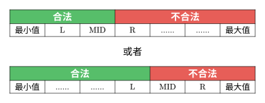
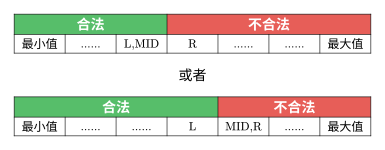
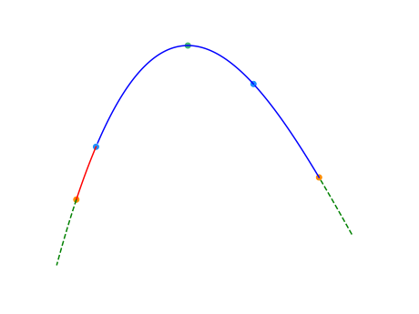
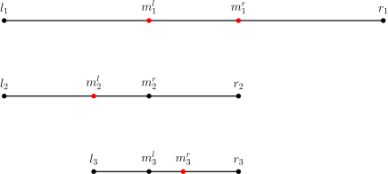

OI Wiki · prijevod · Osnove algoritamaOI Wiki · translation · Algorithm basics
Binarno pretraživanjeBinary search
Sadržaj
Ova stranica kratko predstavlja binarno pretraživanje, binarno pretraživanje po odgovoru te ternarno pretraživanje, izvedeno iz metode polovljenja.
Binarno pretraživanje
Binarno pretraživanje (binary search), poznato i kao pretraživanje polovljenjem intervala (half-interval search) ili logaritamsko pretraživanje (logarithmic search), algoritam je za pronalaženje elementa u sortiranom nizu.
Postupak
Uzmimo kao primjer traženje broja u uzlazno sortiranom nizu.
U svakom koraku pristupamo srednjem elementu trenutnog dijela niza. Ako je srednji element upravo traženi, pretraživanje završava; ako je srednji element manji od tražene vrijednosti, svi elementi lijevo od njega nisu veći od srednjeg, pa traženi element ne može biti među njima i dovoljno je tražiti desno; ako je srednji element veći od tražene vrijednosti, analogno je dovoljno tražiti lijevo.
Konkretno, neka indeksi niza \(a\) počinju od \(1\), neka je duljina niza \(n\) i tražimo položaj broja \(x\). Neka \(l,r\) označavaju da trenutno promatramo samo elemente niza s indeksom \(i\) za koji vrijedi \(l\le i\le r\). Na početku postavimo \(l\gets1\), \(r\gets n\). U svakom koraku pristupamo srednjem elementu \(a_{\textit{mid}}\), gdje je \(\textit{mid}=\left\lfloor\dfrac{l+r}{2}\right\rfloor\), i razlikujemo slučajeve:
- Ako je \(a_{\textit{mid}}<x\), budući da je niz uzlazan, svi brojevi s indeksom manjim ili jednakim \(\textit{mid}\) sigurno su manji od \(x\), pa ih ne treba pretraživati; dovoljno je pretraživati brojeve s indeksom većim od \(\textit{mid}\), tj. postavimo \(l\gets \textit{mid}+1\), a \(r\) ostaje.
- Ako je \(a_{\textit{mid}}>x\), budući da je niz uzlazan, svi brojevi s indeksom većim ili jednakim \(\textit{mid}\) sigurno su veći od \(x\), pa ih ne treba pretraživati; dovoljno je pretraživati brojeve s indeksom manjim od \(\textit{mid}\), tj. \(l\) ostaje, a \(r\gets \textit{mid}-1\).
- Ako je \(a_{\textit{mid}}=x\), pronašli smo položaj broja \(x\) i algoritam završava.
Ako položaj broja \(x\) nismo pronašli ni kad je promatrani raspon postao prazan, tj. \(l>r\), onda \(x\) nije u nizu \(a\).
Svojstva
Vremenska složenost
Najbolja vremenska složenost binarnog pretraživanja je \(O(1)\).
Prosječna i najgora vremenska složenost binarnog pretraživanja su \(O(\log n)\). Budući da algoritam u svakom koraku prepolovi interval koji pretražuje, za niz duljine \(n\) obavit će najviše \(O(\log n)\) usporedbi s traženim elementom.
Prostorna složenost
Prostorna složenost iterativne inačice binarnog pretraživanja je \(O(1)\).
Prostorna složenost rekurzivne inačice (bez eliminacije repnih poziva) je \(O(\log n)\).
Implementacija
int binary_search(int x, int l = 1, int r = n) { // traži indeks broja x u uzlaznom nizu
int ret = -1; // ako nije pronađen, vraća -1
while (l <= r) {
int mid = (l + r) >> 1; // l + r može prekoračiti raspon, vidi napomenu ispod
if (a[mid] < x)
l = mid + 1;
else if (a[mid] > x)
r = mid - 1;
else { // jednakost provjeravamo zadnju jer je u većini koraka element ili veći ili manji
ret = mid;
break;
}
}
return ret;
}
Napomena
-
Prema optimizacijama pri prevođenju – pomak umjesto množenja, ako je \(s\) predznačeni broj i možete jamčiti \(s\ge 0\),
s >> 1troši manje instrukcija negos / 2. -
Kad su \(l\) ili \(r\) vrlo veliki, \(l+r\) može prekoračiti raspon tipa. Ako \(r-l\) pritom ne prekoračuje raspon,
(l + r) >> 1u kodu možete zamijeniti sl + ((r - l) >> 1).
Upozorenje
Kad je \(s\) negativan neparan broj, rezultati s >> 1 i s / 2 razlikuju se za \(1\) i nisu jednaki. Razlog je što prvi zaokružuje prema minus beskonačnosti (standardizirano u C++20, prije toga ovisno o implementaciji), a drugi prema nuli. Vidi C++ operatori nad bitovima. Zato, ako \(l + r\) može biti negativan, (l + r) / 2 može dati \(r\), što u inačici s r = mid dovodi do beskonačne petlje. Npr. za \(l = -1,~r = 0\) vrijednost (l + r) / 2 jednaka je \(0\). Na tu razliku treba paziti pri implementaciji.
bsearch
Funkcija bsearch binarno je pretraživanje iz standardne biblioteke jezika C, definirano u <stdlib.h>. U standardnoj biblioteci C++-a ta je funkcija definirana u <cstdlib>. qsort i bsearch jedine su dvije algoritamske funkcije u standardnoj biblioteci jezika C.
U odnosu na četiri parametra funkcije qsort (STL funkcije za sortiranje), bsearch na krajnjoj lijevoj strani dodaje parametar „adresa traženog elementa”. Element se predaje preko adrese kako bi se mogla izravno upotrijebiti ista funkcija usporedbe kao za qsort, čime se odmah nakon sortiranja može pretraživati. Zato se tom parametru ne može izravno predati konkretna vrijednost: traženu vrijednost treba najprije spremiti u varijablu, a zatim predati adresu te varijable.
Funkcija bsearch tako ima ukupno pet parametara: adresu traženog elementa, adresu početka niza, broj elemenata, veličinu elementa i pravilo usporedbe. Pravilo usporedbe i dalje se zadaje funkcijom usporedbe; vidi STL funkcije za sortiranje.
Povratna vrijednost funkcije bsearch adresa je pronađenog elementa, tipa void *.
Napomena: bsearch se od std::lower_bound i std::upper_bound, koje opisujemo u nastavku, razlikuje u dvjema stvarima:
- kad više elemenata zadovoljava uvjet, nije određeno koji se od njih vraća;
- kad odgovarajući element nije pronađen, vraća
NULL.
Pomoću lower_bound može se ostvariti gotovo ista funkcionalnost kao s bsearch (dovoljno je posebno obraditi slučaj kad element nije pronađen da bi bila potpuno jednaka), pa se zadaci rješivi s bsearch mogu izravno prepisati s lower_bound.
Binarno pretraživanje po odgovoru
Binarno pretraživanje po odgovoru algoritam je koji iskorištava poopćenu uređenost odgovora na problem (obično zvanu monotonost) i, postupkom sličnim binarnom pretraživanju, brzo pronalazi odgovor.
Ako nije drukčije naglašeno, binarno pretraživanje po odgovoru obično se odnosi na cjelobrojne odgovore, tj. unaprijed znamo da je odgovor cijeli broj.
Problemi na koje se može primijeniti binarno pretraživanje po odgovoru obično su oblika „nađi najveću (najmanju) vrijednost koja zadovoljava uvjet \(P\)” i imaju sljedeća svojstva:
- za proizvoljan broj \(x\) lako je provjeriti zadovoljava li \(x\) uvjet;
- za odgovor se mogu odrediti grube donja i gornja granica, tj. mogu se odrediti \(L\) i \(R\) takvi da, ako odgovor \(x\) postoji, nužno vrijedi \(L\le x \le R\);
- raspon tih grubih granica je velik, pa bi provjera svih kandidata redom premašila vremensko ograničenje;
- uvjet \(P\) ima poopćenu uređenost.
Pretpostavimo da postoji funkcija \(f(x)\) takva da je \(f(x)=1\) ako i samo ako \(x\) zadovoljava uvjet \(P\), a inače \(f(x)=0\). Poopćenu uređenost uvjeta \(P\) možemo definirati na sljedeći način:
-
Ako za sve \(L\le i<j \le R\) vrijedi \(f(i)\le f(j)\), tj. \(f(x)\) je neopadajuća. Zapišemo li \(f(i)\) za \(i=L,\dots,R\) kao 01-niz, on ima oblik
00...011...1. Tada binarnim pretraživanjem po odgovoru možemo naći najmanju vrijednost koja zadovoljava uvjet \(P\). -
Ako za sve \(L \le i<j \le R\) vrijedi \(f(i)\ge f(j)\), tj. \(f(x)\) je nerastuća. Odgovarajući 01-niz ima oblik
11...100...0. Tada binarnim pretraživanjem po odgovoru možemo naći najveću vrijednost koja zadovoljava uvjet \(P\).
Drugim riječima, prva vrsta uređenosti znači: ako znamo da \(x\) zadovoljava uvjet \(P\), onda ga sigurno zadovoljavaju i svi brojevi veći od \(x\). Binarno pretraživanje po odgovoru pronalazi \(x\) koji odgovara opisu „svi brojevi manji od njega ne zadovoljavaju uvjet \(P\), a on i svi veći od njega zadovoljavaju uvjet \(P\)”.
Druga vrsta uređenosti znači: ako znamo da \(x\) zadovoljava uvjet \(P\), onda ga sigurno zadovoljavaju i svi brojevi manji od \(x\). Binarno pretraživanje po odgovoru pronalazi \(x\) koji odgovara opisu „on i svi brojevi manji od njega zadovoljavaju uvjet \(P\), a svi veći od njega ne zadovoljavaju uvjet \(P\)”.
Postupak
Uzmimo kao primjer traženje najmanje vrijednosti binarnim pretraživanjem po odgovoru (algoritam tada zahtijeva da problem ima prvu gore opisanu vrstu uređenosti). Neka su grube donja i gornja granica odgovora \(L\) i \(R\).
Neka \(l,r\) označavaju da trenutno sa sigurnošću znamo da odgovor \(x\) zadovoljava \(l \le x \le r\). Slično binarnom pretraživanju, na početku postavimo \(l\gets L\), \(r\gets R\). U svakom koraku provjeravamo zadovoljava li \(\textit{mid}=\left\lfloor\dfrac{l+r}{2}\right\rfloor\) uvjet \(P\) i razlikujemo slučajeve:
- Ako \(\textit{mid}\) ne zadovoljava uvjet (tj. \(f(\textit{mid})\) je \(0\)), po uređenosti problema ni jedan broj manji ili jednak \(\textit{mid}\) ne zadovoljava uvjet i ne treba ih razmatrati, pa postavimo \(l\gets \textit{mid}+1\), a \(r\) ostaje.
- Ako \(\textit{mid}\) zadovoljava uvjet (tj. \(f(\textit{mid})\) je \(1\)), po uređenosti problema svi brojevi veći ili jednaki \(\textit{mid}\) zadovoljavaju uvjet; no budući da tražimo najmanju vrijednost, brojeve veće od \(\textit{mid}\) ne treba razmatrati i dovoljno je promatrati brojeve manje ili jednake \(\textit{mid}\). Tada postavimo \(r \gets \textit{mid}\), a \(l\) ostaje.
Kad raspon odgovora zadovolji \(l=r\) (tj. više ne vrijedi \(l<r\)), algoritam završava. Tada je \(l\) odnosno \(r\) odgovor.
Napomena: ako unutar granica odgovor ne postoji (tzv. slučaj bez rješenja), svaki upit \(f(\textit{mid})\) vraća \(0\), pa po završetku algoritma vrijedi \(l=r=R\) i \(f(l)=0\). Zato, ako treba prepoznati slučaj bez rješenja, dovoljno je dodatno provjeriti je li \(f(l)\) jednako \(0\).
Slično binarnom pretraživanju, algoritam u svakom koraku prepolovi interval koji pretražuje, pa je vremenska složenost \(O(M \log (R-L+1))\), gdje je \(M\) vremenska složenost jedne provjere zadovoljava li \(\textit{mid}\) uvjet \(P\).
Implementacija
Prema gornjem opisu algoritma možemo dati sljedeću implementaciju:
// traži najmanji cijeli broj x u [L, R] koji zadovoljava uvjet P, uz L <= R
// uvjet P mora imati prvu vrstu uređenosti, tj. f(x) je neopadajuća
// u implementaciji je obično check(x) = f(x)
// ako u intervalu nema rješenja, vraća -1
int binary_search_min(int L, int R) {
if (L > R) return -1;
int l = L, r = R;
while (l < r) {
int mid = (l + r) >> 1;
if (check(mid)) // f(mid) = 1, uvjet P je zadovoljen
r = mid; // odgovor je u [l, mid]
else
l = mid + 1; // odgovor je u [mid + 1, r]
}
// sada je l == r
if (!check(l)) return -1; // provjera postoji li rješenje
return l;
}
Kad -1 označava nepostojanje rješenja, treba osigurati da se ne može zamijeniti s valjanim odgovorom.
Detalji implementacije
U rješenjima zadataka možemo naići i na drugu inačicu implementacije:
// traži najmanji cijeli broj x u [L, R] koji zadovoljava check(x)
// check mora biti neopadajuća na [L, R]
// ako je interval prazan ili u njemu nema rješenja, vraća -1
int binary_search_min(int L, int R) {
if (L > R) return -1;
int l = L, r = R;
while (l <= r) {
int mid = (l + r) >> 1;
if (check(mid))
r = mid - 1;
else
l = mid + 1;
}
if (l > R) return -1;
return l;
}
Obje inačice daju isti odgovor, ali održavaju različite invarijante petlje.
Zašto obje inačice pronalaze najmanju dopustivu vrijednost?
Pretpostavimo najprije da je \([L,R]\) neprazan i da u njemu postoji odgovor; najmanji broj koji zadovoljava uvjet \(P\) označimo \(\textit{ans}\). Budući da je \(f\) neopadajuća, u izvornom intervalu \([L,R]\) vrijedi
Inačica s l < r čuva odgovor unutar zatvorenog intervala.
Invarijanta koju održava jest
U svakom koraku uzimamo \(\textit{mid}=\left\lfloor\dfrac{l+r}{2}\right\rfloor\). Ako je \(f(\textit{mid})=1\), onda je \(\textit{ans}\le\textit{mid}\) i postavljamo \(r\gets\textit{mid}\); ako je \(f(\textit{mid})=0\), onda je \(\textit{ans}>\textit{mid}\) i postavljamo \(l\gets\textit{mid}+1\). Obje izmjene čuvaju invarijantu.
Dok je \(l<r\), vrijedi \(l\le\textit{mid}<r\), pa svaka iteracija strogo smanjuje interval. Po završetku petlje \(l=r\), a iz invarijante slijedi \(\textit{ans}=l\).
Inačica s l <= r isključuje već odlučeni dio; odgovor se može nalaziti neposredno iza desne granice.
Invarijanta koju održava jest: u izvornom intervalu \([L,R]\) svi \(x<l\) zadovoljavaju \(f(x)=0\), a svi \(x>r\) zadovoljavaju \(f(x)=1\). Uz pretpostavku da odgovor postoji, to znači
Ako je \(f(\textit{mid})=1\), svi \(x\ge\textit{mid}\) u izvornom intervalu zadovoljavaju \(f(x)=1\), pa možemo postaviti \(r\gets\textit{mid}-1\); ako je \(f(\textit{mid})=0\), svi \(x\le\textit{mid}\) u izvornom intervalu zadovoljavaju \(f(x)=0\), pa možemo postaviti \(l\gets\textit{mid}+1\).
Svaka iteracija iz intervala koji još treba pretražiti isključuje barem jedan cijeli broj, pa petlja na kraju završava.
Dok se petlja izvršava, vrijedi \(l\le\textit{mid}\le r\). Ako izvršimo \(r\gets\textit{mid}-1\), nova desna granica zadovoljava \(r\ge l-1\); ako izvršimo \(l\gets\textit{mid}+1\), nova lijeva granica zadovoljava \(l\le r+1\). Dakle, koju god izmjenu primijenili, nakon nje vrijedi \(l\le r+1\). Petlja završava kad je \(l>r\), a uz cjelobrojnost granica slijedi da tada nužno vrijedi \(l=r+1\). Iz invarijante o položaju odgovora \(l\le\textit{ans}\le r+1\) dobivamo \(\textit{ans}=l\).
Ovdje treba uočiti: interval \([l,r]\) koji još treba pretražiti ne mora uvijek sadržavati odgovor. Npr. ako u nekom koraku upravo dobijemo \(\textit{mid}=\textit{ans}\), nakon \(r\gets\textit{mid}-1\) vrijedi \(\textit{ans}=r+1\). Odgovor tada više nije u \([l,r]\), ali i dalje zadovoljava invarijantu \(l\le\textit{ans}\le r+1\), pa to ne utječe na gornji dokaz ispravnosti.
Kad rješenja nema, dvije inačice završavaju na različitim položajima.
Za inačicu s l <= r: ako po završetku petlje vrijedi \(l\le R\), budući da lijeva granica uvijek zadovoljava \(l\ge L\), \(l\) je u izvornom intervalu. Iz \(l=r+1\) i invarijante „svi \(x>r\) u izvornom intervalu zadovoljavaju \(f(x)=1\)” slijedi \(f(l)=1\), pa check(l) ne treba ponovno pozivati.
Ako rješenja nema, na kraju je \(l=R+1\), što je već izvan izvornog intervala pretraživanja. Budući da check zahtijevamo samo na \([L,R]\), najprije treba provjeriti l > R, a ne izravno pozvati check(l) da bismo utvrdili postoji li rješenje.
Za inačicu s l < r, prisjetimo li se ranijeg opisa, ako u intervalu nema rješenja na kraju je \(l=r=R\). Tada treba dodatno provjeriti je li check(l) jednako \(0\) da bismo razlikovali je li odgovor \(R\) ili rješenja nema.
Ukratko, uz \(L\le R\) i \(f\) neopadajuću na \([L,R]\), obje inačice završavaju nakon konačno mnogo iteracija. Ako u intervalu postoji dopustiva vrijednost, obje na kraju daju \(l=\textit{ans}\) i vraćaju najmanji cijeli broj u intervalu koji zadovoljava uvjet; ako rješenja nema, inačica s l < r to utvrđuje provjerom check(l) nakon petlje, a inačica s l <= r provjerom l > R nakon petlje, i obje vraćaju dogovorenu oznaku za nepostojanje rješenja. Za prazan interval \(L>R\) oba koda vraćaju oznaku za nepostojanje rješenja prije ulaska u petlju. Dakle, iako dvije implementacije održavaju različite invarijante petlje i završavaju na različitim položajima, obje ispravno obavljaju traženi upit za najmanju dopustivu vrijednost i daju isti rezultat.
Ove dvije inačice pokazuju da ispravnost implementacije binarnog pretraživanja ovisi o usklađenosti značenja granica, invarijante petlje, uvjeta petlje i pravila izmjene. Samo iz toga jesu li krajevi intervala uključeni ili koristi li petlja l < r ili l <= r ne može se zaključiti je li neka inačica ispravna.
Da bismo dokazali ispravnost neke inačice, treba potvrditi:
- inicijalizacija zadovoljava invarijantu petlje;
- svaka izmjena čuva invarijantu i strogo smanjuje broj cijelih brojeva u intervalu koji još treba pretražiti, čime jamči završetak petlje;
- po završetku petlje iz invarijante i uvjeta zaustavljanja može se utvrditi da je povratna vrijednost upravo odgovor; ako je dopušteno nepostojanje rješenja, treba objasniti i kako se ono prepoznaje.
Pri raspravi o načinima implementacije treba posebno razlikovati „interval koji još treba pretražiti” od „intervala koji jamčeno sadrži konačan odgovor”: zbog različitih rubnih uvjeta oni nisu nužno jednaki i ne može se jednoobrazno zahtijevati da odgovor uvijek bude u intervalu koji još treba pretražiti.
U nastavku je nekoliko uobičajenih inačica. Za sve pretpostavljamo \(L\le R\), da problem ima prvu vrstu uređenosti i da najmanja dopustiva vrijednost \(\textit{ans}\) postoji. Položaj odgovora određen je stupcem „invarijanta o položaju odgovora”.
| Inačica | Početni \(l,r\) | Uvjet petlje | \(\textit{mid}\) | Kad \(f(\textit{mid})=1\) | Kad \(f(\textit{mid})=0\) | Invarijanta o položaju odgovora | Na kraju | Vraća |
|---|---|---|---|---|---|---|---|---|
| Zatvoreni interval \([l,r]\), isključuje odlučeni dio | \(l=L,\ r=R\) | \(l\le r\) | \(\left\lfloor\dfrac{l+r}{2}\right\rfloor\) | \(r\gets\textit{mid}-1\) | \(l\gets\textit{mid}+1\) | \(l\le\textit{ans}\le r+1\) | \(l=r+1\) | \(l\) |
| Zatvoreni interval \([l,r]\), čuva odgovor | \(l=L,\ r=R\) | \(l<r\) | \(\left\lfloor\dfrac{l+r}{2}\right\rfloor\) | \(r\gets\textit{mid}\) | \(l\gets\textit{mid}+1\) | \(l\le\textit{ans}\le r\) | \(l=r\) | \(l\) |
| Poluotvoreni interval \([l,r)\), isključuje odlučeni dio | \(l=L,\ r=R+1\) | \(l<r\) | \(\left\lfloor\dfrac{l+r}{2}\right\rfloor\) | \(r\gets\textit{mid}\) | \(l\gets\textit{mid}+1\) | \(l\le\textit{ans}\le r\) | \(l=r\) | \(l\) |
| Poluotvoreni interval \((l,r]\), čuva odgovor | \(l=L-1,\ r=R\) | \(l+1<r\) | \(\left\lfloor\dfrac{l+r}{2}\right\rfloor\) | \(r\gets\textit{mid}\) | \(l\gets\textit{mid}\) | \(l<\textit{ans}\le r\) | \(l+1=r\) | \(r\) |
| Otvoreni interval \((l,r)\), održava obje granice | \(l=L-1,\ r=R+1\) | \(l+1<r\) | \(\left\lfloor\dfrac{l+r}{2}\right\rfloor\) | \(r\gets\textit{mid}\) | \(l\gets\textit{mid}\) | \(l<\textit{ans}\le r\) | \(l+1=r\) | \(r\) |
Uz tablicu treba napomenuti još nekoliko stvari:
- U 3. retku \([l, r)\) je interval koji još treba pretražiti, ali odgovor može biti upravo \(r\).
-
- redak čuva odgovor u \((l, r]\) i oslanja se na to da početna desna granica \(R\) zadovoljava \(f(R) = 1\). Dok se petlja izvršava vrijedi \(r - l \ge 2\), pa je u 4. i 5. retku ispravno i zaokruživanje sredine prema gore.
- U 5. retku \((l, r)\) označava položaje između dviju granica koje još treba provjeriti. Početni \(L - 1\) možemo smatrati virtualnim graničnikom s vrijednošću 0, a \(R + 1\) virtualnim graničnikom s vrijednošću 1. Petlja funkciju provjere poziva samo unutar izvornog intervala, pa vrijednosti u graničnicima nije potrebno zaista računati.
- Ako treba obraditi slučaj bez rješenja: u 1., 3. i 5. retku to se prepoznaje po tome je li povratna vrijednost \(R + 1\); u 2. retku treba provjeriti \(f(l)\); u 4. retku treba najprije provjeriti \(f(R)\).
Minimizacija maksimuma i maksimizacija minimuma
Problemi minimizacije maksimuma i maksimizacije minimuma tipični su problemi na koje se može primijeniti binarno pretraživanje po odgovoru.
Uzmimo kao primjer minimizaciju maksimuma. Obično svakom rješenju odgovara skup \(S\) koji treba razmotriti. Ako među svim rješenjima treba minimizirati maksimum brojeva u pripadnom skupu \(S\), problem se može preoblikovati u: nađi najmanji \(k\) za koji postoji rješenje sa \(\max(S) \le k\).
Taj problem ima poopćenu uređenost: ako postoji rješenje sa \(\max(S) \le k\), onda za \(i\ge k\) to rješenje zadovoljava i \(\max(S)\le i\). Dakle za \(i \ge k\) postoji rješenje sa \(\max(S) \le i\), što također ispunjava uvjet zadatka. Stoga se problem može riješiti binarnim pretraživanjem po odgovoru. Maksimizacija minimuma rješava se analogno.
Binarno pretraživanje po odgovoru u STL-u
std::lower_bound i std::upper_bound
Standardna biblioteka C++-a implementira:
- funkciju
std::lower_boundkoja pronalazi prvi element koji nije manji od zadane vrijednosti; - funkciju
std::upper_boundkoja pronalazi prvi element veći od zadane vrijednosti.
Obje su implementirane binarnim pretraživanjem, pa prije poziva elementi moraju biti sortirani (sortiranost se ovdje odnosi na funkciju usporedbe iz nastavka, ne nužno na matematičku uređenost) kako bi njihov problem imao poopćenu uređenost (tj. za std::lower_bound, ako \(a_i\) nije manji od zadane vrijednosti, ni brojevi nakon \(i\) nisu manji od zadane vrijednosti; za std::upper_bound, ako je \(a_i\) veći od zadane vrijednosti, i brojevi nakon \(i\) veći su od zadane vrijednosti).
std::lower_bound i std::upper_bound imaju po četiri parametra:
first: početni iterator niza, pokazuje na prvi element niza;last: završni iterator niza, pokazuje na mjesto iza posljednjeg elementa niza. Drugim riječima, ako jelastdvosmjerni iterator,--lastpokazuje na posljednji element niza;value: zadana vrijednost;comp(neobavezno): funkcija usporedbe, piše se kao za funkcijusort. Treba paziti da jestd::lower_boundpoziva u oblikucomp(element, value), astd::upper_boundu oblikucomp(value, element).
Obje vraćaju iterator na element koji zadovoljava uvjet, istog tipa kao predani iteratori. Dakle, ako predamo pokazivače na niz, vraća se pokazivač na odgovarajući element niza. Ako element koji zadovoljava uvjet ne postoji, vraća se last.
Obje su definirane u zaglavlju <algorithm>.
Primjeri upotrebe
- U nizu \(a\) duljine \(n\) s indeksima od \(1\), na položajima od \(l\) do \(r\), pronaći prvi broj koji nije manji od \(x\) i dobiti njegov indeks:
lower_bound(a+l,a+r+1,x)-a. - U nizu \(a\) duljine \(n\) s indeksima od \(0\) pronaći prvi broj veći od \(x\) (mora postojati) i dobiti njegovu vrijednost:
*upper_bound(a,a+n,x). - U vectoru \(a\) duljine \(n\) pronaći prvi broj koji nije manji od \(x\) i dobiti njegov indeks (indeksi vectora počinju od \(0\)):
lower_bound(a.begin(),a.end(),x)-a.begin().
O iteratorima
Gornji početni i završni iterator moraju biti ForwardIterator. Pokazivači na niz te iteratori vectora, seta, mape i stringa zadovoljavaju taj zahtjev.
O vremenskoj složenosti algoritma
U implementaciji standardne biblioteke libstdc++ koju koristi GCC obje funkcije srednjem elementu pristupaju pomoću std::advance. To znači da je složenost funkcije \(O(\log n)\) samo kad iterator podržava slučajni pristup (npr. predani su pokazivači na niz ili iteratori vectora). Ako slučajni pristup nije podržan (npr. set ili map), složenost funkcije jednaka je zbroju vremena pristupa srednjem elementu u svakom koraku (obično linearno). Npr. operacija poput lower_bound(st.begin(),st.end(),val) na setu ili mapi ima vremensku složenost \(O(n)\). Tada treba koristiti člansku funkciju st.lower_bound(val).
Implementacija std::lower_bound i std::upper_bound pomoću bsearch
Budući da bsearch vraća NULL kad element nije pronađen (vidi bsearch), npr. pri traženju broja 3 u nizu 1, 2, 4, 5, 6, ostvariti funkcionalnost lower_bound pomoću bsearch postaje teško.
Pri implementaciji std::lower_bound i std::upper_bound pomoću bsearch možemo iskoristiti dogovor o parametrima funkcije usporedbe: prvi parametar pokazuje na traženi element, a drugi na element niza u kojem tražimo. Dakle, dovoljno je da funkcija usporedbe može doći do adrese početka niza.
int A[100005]; // primjer globalnog niza
// compare uspoređuje vrijednosti na koje pokazuju dva int pokazivača: *p1 > *p2 vraća pozitivan broj, jednakost
// 0, manje vraća negativan broj
int compare(const void*, const void*);
// traži adresu prvog elementa koji nije manji od traženog elementa
int lower(const void* p1, const void* p2) {
int* a = (int*)p1;
int* b = (int*)p2;
if ((b == A || compare(a, b - 1) > 0) && compare(a, b) > 0)
return 1;
else if (b != A && compare(a, b - 1) <= 0)
return -1; // koristi oduzimanje adresa, pa tip elementa mora biti naveden
else
return 0;
}
// traži adresu prvog elementa većeg od traženog elementa
int upper(const void* p1, const void* p2) {
int* a = (int*)p1;
int* b = (int*)p2;
if ((b == A || compare(a, b - 1) >= 0) && compare(a, b) >= 0)
return 1;
else if (b != A && compare(a, b - 1) < 0)
return -1; // koristi oduzimanje adresa, pa tip elementa mora biti naveden
else
return 0;
}
Napomena: ako je odgovor položaj iza kraja (npr. traženi element veći je od svih elemenata), gornja metoda i dalje vraća NULL, što treba posebno obraditi.
Budući da današnji OI natjecatelji rijetko pišu čisti C, a ova metoda ima ograničenu primjenu, ona nije u središtu pozornosti. Početnicima se preporučuje izravno koristiti funkcije std::lower_bound i std::upper_bound iz C++-a.
std::partition_point
C++11 uvodi std::partition_point. Služi za brzo pronalaženje „točke particije” u već particioniranom nizu binarnim pretraživanjem po odgovoru.
std::partition_point ima tri parametra:
first,last: kao gore;p: unarni predikat. To je pozivni objekt koji prima jedan argument \(v\) i vraća logičku vrijednost koja kaže zadovoljava li \(v\) uvjet particije.
Neka je predani niz \(a\); funkcija vraća iterator na prvi element koji ne zadovoljava uvjet particije, tj. iterator na element s najmanjim indeksom \(x\) za koji je \(p(a_x)\) jednako false.
Niz mora biti particioniran, tj. mora imati drugu gore opisanu vrstu poopćene uređenosti. Drugim riječima, zapišemo li rezultate \(p(v)\) za svaki element \(v\) niza kao 01-niz, on ima oblik 11...100...0, a funkcija vraća iterator na položaj prve \(0\).
Odnos std::partition_point prema std::lower_bound i std::upper_bound
Zapravo su std::lower_bound i std::upper_bound posebni oblici funkcije std::partition_point.
Definirajmo funkciju f kodom: bool f(int v) { return !(val <= v); }. Predamo li f kao predikat funkciji std::partition_point, dobivamo isti rezultat kao std::lower_bound. Analogno za std::upper_bound.
Binarno pretraživanje po realnom odgovoru
Binarno pretraživanje po realnom odgovoru, poznato i kao binarno pretraživanje s pomičnim zarezom, inačica je binarnog pretraživanja po odgovoru u kojoj je odgovor realan broj.
Za razliku od cjelobrojnog slučaja, kod realnog odgovora obično se ne traži točan odgovor, nego realna aproksimacija koja zadovoljava zadanu preciznost.
Postupak
Uzmimo kao primjer traženje najmanje vrijednosti. Neka su grube donja i gornja granica odgovora \(L\) i \(R\). Neka \(l,r\) označavaju da trenutno sa sigurnošću znamo da odgovor \(x\) zadovoljava \(l\le x\le r\). Na početku postavimo \(l\gets L\), \(r\gets R\). U svakom koraku uzimamo \(\textit{mid}=\dfrac{l+r}{2}\) (pazite, ovdje je riječ o realnom računanju) i provjeravamo zadovoljava li \(\textit{mid}\) uvjet \(P\):
- Ako \(\textit{mid}\) zadovoljava uvjet, slično cjelobrojnom slučaju postavimo \(r\gets \textit{mid}\), a \(l\) ostaje.
- Ako \(\textit{mid}\) ne zadovoljava uvjet, slično cjelobrojnom slučaju postavimo \(l\gets \textit{mid}\), a \(r\) ostaje.
Treba uočiti da se, za razliku od cjelobrojnog slučaja, kod realnog odgovora interval ne može sužavati pomoću mid + 1 ili mid - 1, jer u skupu realnih brojeva ne postoje susjedni elementi; granicu možemo samo postaviti na \(\textit{mid}\) i osloniti se na to da se duljina intervala stalno prepolavlja i približava odgovoru.
Algoritam završava kad duljina intervala \(r-l\) ne premašuje zadanu preciznost \(\textit{eps}\) ili kad dosegne unaprijed zadani broj iteracija. Tada se \(l\), \(r\) ili \(\dfrac{l+r}{2}\) mogu uzeti kao aproksimacija odgovora (ako se zahtijeva da konačna povratna vrijednost zadovoljava uvjet \(P\), treba vratiti \(r\)). Za traženje najveće vrijednosti dovoljno je obrnuti smjerove u gornja dva slučaja: ako \(\textit{mid}\) zadovoljava uvjet, postavimo \(l\gets \textit{mid}\); inače \(r\gets \textit{mid}\) (odgovarajuće, ako se zahtijeva da konačna povratna vrijednost zadovoljava uvjet \(P\), treba vratiti \(l\)).
Koristi li se while (r - l > eps), vremenska složenost binarnog pretraživanja po realnom odgovoru je \(O(M \log((R-L)/\textit{eps}))\). Koristi li se fiksan broj iteracija \(k\), vremenska složenost je \(O(Mk)\). Ovdje je \(M\) vremenska složenost jedne provjere zadovoljava li \(\textit{mid}\) uvjet \(P\). Zbog pogrešaka u računanju s pomičnim zarezom u praksi se obično ne provjerava izravno \(l=r\), nego \(r-l<\textit{eps}\), ili se petlja izvršava fiksan broj puta, npr. \(60\) do \(100\), kako bi se izbjegla beskonačna petlja i zajamčila preciznost.
Implementacija
double binary_search_iter(double L, double R) { // implementacija s fiksnim brojem iteracija
double l = L, r = R;
for (int i = 0; i < 100; ++i) {
double mid = (l + r) / 2;
if (check(mid))
r = mid;
else
l = mid;
}
return r;
}
const double eps = 1e-7; // tražena preciznost, obično 1/100 preciznosti iz zadatka ili manje
double binary_search_eps(double L, double R) { // implementacija s eps
double l = L, r = R;
while (r - l > eps) {
double mid = (l + r) / 2;
if (check(mid))
r = mid;
else
l = mid;
}
return r;
}
Upozorenje
eps ne smije biti prevelik, inače preciznost nije dovoljna; ne smije biti ni premalen, inače se zbog pogrešaka pomičnog zareza možda ne može dosegnuti i petlja postaje beskonačna. Ako je raspon odgovora vrlo velik ili je tražena preciznost vrlo visoka, preporučuje se fiksan broj iteracija umjesto while (r - l > eps).
Primjer zadatka
Luogu P1873 Sječa drveća
Drvosječa Mirko treba nasjeći \(M\) metara drva. To je za Mirka lak posao jer ima prekrasan novi stroj za sječu koji može oboriti šumu poput požara. No Mirku je dopušteno sjeći samo jedan red stabala.
Mirkov stroj radi ovako: Mirko zada visinu \(H\) (u metrima), stroj podigne golemu pilu na visinu \(H\) i odreže sve dijelove stabala viših od \(H\) (dijelovi stabala koji nisu viši od \(H\) metara ostaju netaknuti). Mirko dobiva odrezane dijelove stabala.
Npr. ako su visine stabala u redu \(20,~15,~10,~17\) i Mirko podigne pilu na visinu \(15\) metara, nakon rezanja preostale visine stabala bit će \(15,~15,~10,~15\), a Mirko će od prvog stabla dobiti \(5\) metara drva, a od četvrtog \(2\) metra, ukupno \(7\) metara drva.
Mirko jako brine o zaštiti okoliša, pa ne želi posjeći previše drva. Upravo zato pilu postavlja što je više moguće. Vaš je zadatak pomoći Mirku da pronađe najveću cjelobrojnu visinu pile \(H\) pri kojoj dobiva barem \(M\) metara drva. Drugim riječima, podigne li pilu još \(1\) metar, neće dobiti \(M\) metara drva.
Ideja rješenja
Mogli bismo isprobati sve odgovore od \(0\) do \(10^9\), ali takav naivan pristup sigurno ne bi dobio sve bodove jer isprobavanje od \(0\) do \(10^9\) traje predugo. Umjesto toga možemo binarno pretraživati odgovor na intervalu \([0,~10^9]\) i provjeravati izvedivost svakog kandidata (obično greedy pristupom). To je binarno pretraživanje po odgovoru.
Referentni kod
#include <iostream>
using namespace std;
int a[1000005];
int n, m;
bool check(int k) { // provjera izvedivosti, k je visina pile
long long sum = 0;
for (int i = 1; i <= n; i++) // provjeri svako stablo
if (a[i] > k) // ako je stablo više od pile
sum += (long long)(a[i] - k); // zbroji duljinu odrezanog drva
return sum >= m; // ako je dosegnuta najmanja duljina, izvedivo je
}
int find() {
int l = 0, r = 1e9 + 1; // interval je zatvoren slijeva i otvoren zdesna, pa 10^9 treba uvećati za 1
// održavamo check(l) istinito, a check(r) lažno
while (l + 1 < r) { // dok dvije točke nisu susjedne
int mid = (l + r) / 2; // uzmi sredinu
if (check(mid)) // ako je izvedivo
l = mid; // podigni pilu
else
r = mid; // inače spusti pilu
}
return l; // vrati lijevu vrijednost
}
int main() {
cin >> n >> m;
for (int i = 1; i <= n; i++) cin >> a[i];
cout << find();
return 0;
}
Nakon čitanja gornjeg koda sigurno imate dva pitanja:
-
Zašto je interval pretraživanja poluotvoren (zatvoren slijeva, otvoren zdesna)?
Jer na kraju pretraživanja izgleda ovako (na primjeru najveće dopustive vrijednosti):

a zatim

Za najmanju dopustivu vrijednost je upravo obrnuto.
-
Zašto se vraća lijeva vrijednost?
Kao gore. Po završetku petlje vrijedi \(l+1=r\),
check(l)je istinito, acheck(r)lažno, pa je \(l\) najveća dopustiva vrijednost.
Ternarno pretraživanje
Uvod
Metoda polovljenja može se koristiti za približno nalaženje nultočke funkcije. Ako treba pronaći točku ekstrema unimodalne funkcije, obično se koristi ternarno pretraživanje (ternary search).
U ovom odjeljku koristimo sljedeći strogi dogovor o unimodalnosti: za funkciju \(f(x)\) definiranu na \([l,r]\), ako postoji \(x^*\in[l,r]\) takav da je \(f(x)\) strogo rastuća na \([l,x^*]\) i strogo padajuća na \([x^*,r]\), kažemo da je \(f(x)\) unimodalna funkcija (unimodal function). Oba intervala sadrže \(x^*\), pa je \(x^*\) jedinstvena točka maksimuma, a \(f(x^*)\) maksimum.
Zašto točku ekstrema ne tražimo kao nultočku derivacije?
Prvo, unimodalnost ne jamči da je nultočka derivacije jedinstvena, a točka u kojoj je derivacija nula ne mora biti točka maksimuma. Npr.
Nultočke \(f'(x)\) su \(x=1\) i \(x=3\), a maksimum \(f(x)\) postiže se u \(x=2\), gdje funkcija nije derivabilna.
Drugo, za neke funkcije postupak i rezultat deriviranja prilično su složeni, a funkcija se možda ni ne može zapisati u obliku \(y=f(x)\).
Treće, u nekim zadacima unimodalna funkcija čiji ekstrem tražimo nije jedna zasebna funkcija, nego funkcija dobivena posebnim operacijama nad više funkcija (npr. maksimum minimuma više linearnih funkcija koje nemaju potpuno jednaku monotonost). Tada derivacija može biti funkcija po dijelovima, a u nekim točkama funkcija možda nije derivabilna.
Napomena
Ternarnim pretraživanjem može se naći i maksimum unimodalne funkcije i minimum „unidolne” funkcije. Radi jednostavnosti, osim ako nije drukčije rečeno, u nastavku kao primjer uzimamo traženje maksimuma unimodalne funkcije.
Postupak
Osnovna ideja ternarnog pretraživanja slična je metodi polovljenja, ali u svakom koraku unutar trenutnog intervala \([l,r]\) (između dviju narančastih točaka na slici) biramo dvije točke \(\textit{lmid} < \textit{rmid}\) (dvije plave točke na slici). Kao na slici, ako je \(f(\textit{lmid})<f(\textit{rmid})\), funkcija je na \([l,\textit{lmid})\) (crveni dio na slici) nužno rastuća, točka maksimuma (zelena točka na slici) sigurno nije u tom intervalu, pa ga možemo odbaciti; no ne možemo isključiti mogućnost da je točka maksimuma desno od \(\textit{rmid}\), pa ne možemo odbaciti ništa više. I obrnuto.

Ispravnost ternarnog pretraživanja ne ovisi o konkretnom izboru \(\textit{lmid}\) i \(\textit{rmid}\); dovoljno je da to budu dvije različite točke unutar intervala, a obično se uzimaju dvije trećinske točke. No njihov izbor utječe na učinkovitost. U svakom se koraku odbacuje jedan od dvaju rubnih intervala, pa se mogu uzeti i dvije točke blizu sredine kako bi odbačeni interval bio veći. Uzmemo li \(\textit{mid}\pm\delta\), gdje je \(\delta>0\) dovoljno malen, usporedba vrijednosti funkcije odgovara određivanju predznaka približne derivacije \(\dfrac{f(\textit{mid}+\delta)-f(\textit{mid}-\delta)}{2\delta}\). Budući da funkcije na algoritamskim natjecanjima obično imaju dobru glatkoću, na temelju toga možemo grubo odrediti s koje je strane \(\textit{mid}\) točka ekstrema i tako postići učinkovitost blisku metodi polovljenja.
Implementacija
Pseudokod:
Izbor točaka podjele
U kodu su točke podjele \(\textit{mid} \pm \varepsilon / 3\) kako bi uvijek bile između trenutnih \(l\) i \(r\), čime se izbjegava beskonačna petlja.
Cjelobrojni slučaj
Ako je domena funkcije \(f(x)\) skup cijelih brojeva, i gornje ternarno pretraživanje i metoda zlatnog reza iz nastavka trebaju završiti čim je \(r-l\) vrlo malen. Za vrlo malen \(r-l\) točku maksimuma treba naći izravnim prolaskom kroz sve kandidate.
Optimizacija: metoda zlatnog reza
Ako je jedan poziv \(f(x)\) skup i treba dodatno smanjiti broj poziva \(f(x)\), konstanta ternarnog pretraživanja može se dodatno poboljšati metodom zlatnog reza (golden-section search). To je ujedno važan dio metode optimalnog izbora koju je predložio Hua Luogeng.
U ternarnom pretraživanju svaka iteracija zahtijeva dva poziva funkcije, a nakon jedne iteracije duljina intervala smanji se najviše na \(1/2\) izvorne. To znači da za postizanje preciznosti \(\varepsilon\) treba barem
poziva funkcije. To je najbolje što ternarno pretraživanje može postići. Odaberu li se druge točke podjele, npr. trećinske točke, broj poziva dodatno raste jer se interval nakon jedne iteracije sporije skraćuje.
Ideja poboljšanja metodom zlatnog reza jest ponovno iskoristiti već izračunatu točku podjele. Tako su, osim u prvoj iteraciji koja zahtijeva dva poziva funkcije, u svim ostalim iteracijama potreban samo jedan poziv. Neka je omjer zlatnog reza
U svakoj iteraciji biraju se lijeva i desna točka zlatnog reza:
Podjela dužine točkama zlatnog reza ima samosličnu strukturu. Drugim riječima, \(m^l\) je lijeva točka zlatnog reza dužine \([l,r]\), ali i desna točka zlatnog reza dužine \([l,m^r]\). Prednost takvog izbora jest da je u iteraciji \(k>1\) jedna od odabranih točaka podjele uvijek već ranije izračunata, pa se prethodni rezultat može izravno iskoristiti.

Uz takav izbor točaka podjele, za postizanje preciznosti \(\varepsilon\) dovoljno je
poziva funkcije. Asimptotski je broj poziva funkcije manji.
Pseudokod:
Primjer zadatka
Luogu P3382 - Ternarno pretraživanje
Zadani su polinom \(N\)-tog stupnja i interval \([l, r]\). Pronađite jedinstveni \(x\) takav da je funkcija rastuća na \([l, x]\) i padajuća na \([x, r]\).
Ideja rješenja
Zadatak traži vrijednost argumenta u kojoj polinom \(N\)-tog stupnja postiže maksimum na \([l, r]\), pa očito možemo primijeniti ternarno pretraživanje. Implementacija u nastavku koristi dvije trećinske točke i pomiče krajeve intervala na točke koje su zaista uspoređene; kad je interval dovoljno malen, ispisuje njegovu sredinu.
Referentni kod
#include <cmath>
#include <iomanip>
#include <iostream>
using namespace std;
constexpr double eps = 1e-7;
int N;
double l, r, A[20], lmid, rmid;
double f(double x) {
double res = (double)0;
for (int i = N; i >= 0; i--) res += A[i] * pow(x, i);
return res;
}
int main() {
cin.tie(nullptr)->sync_with_stdio(false);
cin >> N >> l >> r;
for (int i = N; i >= 0; i--) cin >> A[i];
while (r - l > eps) {
lmid = l + (r - l) / 3;
rmid = r - (r - l) / 3;
if (f(lmid) > f(rmid))
r = rmid;
else
l = lmid;
}
cout << fixed << setprecision(6) << (l + r) / 2;
return 0;
}
eps = 1e-7
n, l, r = map(float, input().split())
a = tuple(map(float, input().split()))[::-1]
def f(x):
return sum(x**i * j for i, j in enumerate(a))
while r - l > eps:
lmid = l + (r - l) / 3
rmid = r - (r - l) / 3
if f(lmid) > f(rmid):
r = rmid
else:
l = lmid
print(f"{(l + r) / 2:.6f}")
Zadaci za vježbu
- UVa 1476 - Error Curves
- UVa 10385 - Duathlon
- UOJ 162 - Tsinghua Training 2015, Testiranje žarulja
- Luogu P7579 - RdOI R2, Vaganje (weigh)
Razlomačko programiranje
Vidi: Razlomačko programiranje
Razlomačko programiranje (fractional programming) obično se opisuje sljedećim problemom: svaki predmet ima dva svojstva \(c_i\), \(d_i\), a treba na neki način odabrati nekoliko predmeta tako da \(\dfrac{\sum{c_i}}{\sum{d_i}}\) bude najveći ili najmanji.
Klasični su primjeri ciklus optimalnog omjera, razapinjuće stablo optimalnog omjera i slično.
Razlomačko programiranje može se riješiti metodom polovljenja.
Literatura i bilješke
Contents
This page briefly introduces binary search, binary search on the answer, and ternary search, which is derived from the bisection method.
Binary search
Binary search, also known as half-interval search or logarithmic search, is an algorithm for finding an element in a sorted sequence.
Procedure
Take searching for a number in an ascending array as an example.
Each time it visits the middle element of the current part of the array. If the middle element is exactly the one we are looking for, the search ends; if the middle element is smaller than the value sought, then all elements to the left are not greater than the middle element, so the sought element cannot be among them and we only need to search to the right; if the middle element is greater than the value sought, by the same reasoning we only need to search to the left.
Concretely, let the indices of array \(a\) start from \(1\), let its length be \(n\), and suppose we want to find the position of the number \(x\). Let \(l,r\) denote that we currently only consider the elements of the array whose index \(i\) satisfies \(l\le i\le r\). Initially set \(l\gets1\), \(r\gets n\). Each time, visit the middle element \(a_{\textit{mid}}\), where \(\textit{mid}=\left\lfloor\dfrac{l+r}{2}\right\rfloor\), and distinguish cases:
- If \(a_{\textit{mid}}<x\), since the array is ascending, all numbers with index less than or equal to \(\textit{mid}\) are certainly smaller than \(x\), so there is no need to search them; we only need to search the numbers with index greater than \(\textit{mid}\), i.e. set \(l\gets \textit{mid}+1\) and leave \(r\) unchanged.
- If \(a_{\textit{mid}}>x\), since the array is ascending, all numbers with index greater than or equal to \(\textit{mid}\) are certainly greater than \(x\), so there is no need to search them; we only need to search the numbers with index less than \(\textit{mid}\), i.e. leave \(l\) unchanged and set \(r\gets \textit{mid}-1\).
- If \(a_{\textit{mid}}=x\), we have found the position of \(x\) and the algorithm ends.
If the position of \(x\) has not been found by the time the considered range becomes empty, i.e. \(l>r\), then \(x\) is not in the array \(a\).
Properties
Time complexity
The best-case time complexity of binary search is \(O(1)\).
The average and worst-case time complexity of binary search are both \(O(\log n)\). Since the algorithm halves the search interval at every step, for an array of length \(n\) it performs at most \(O(\log n)\) comparisons with the target element.
Space complexity
The space complexity of the iterative version of binary search is \(O(1)\).
The space complexity of the recursive version (without tail-call elimination) is \(O(\log n)\).
Implementation
int binary_search(int x, int l = 1, int r = n) { // find the index of x in an ascending array
int ret = -1; // return -1 if not found
while (l <= r) {
int mid = (l + r) >> 1; // l + r may overflow, see the Note below
if (a[mid] < x)
l = mid + 1;
else if (a[mid] > x)
r = mid - 1;
else { // equality is tested last because in most steps the element is either greater or smaller
ret = mid;
break;
}
}
return ret;
}
Note
-
See compiler optimizations – shifts instead of multiplication: when \(s\) is a signed number and you can guarantee \(s\ge 0\),
s >> 1uses fewer instructions thans / 2. -
When \(l\) or \(r\) is very large, \(l+r\) may overflow. If \(r-l\) does not overflow in that case,
(l + r) >> 1in the code can be replaced byl + ((r - l) >> 1).
Warning
When \(s\) is a negative odd number, the results of s >> 1 and s / 2 differ by \(1\) and are not the same. This is because the former rounds toward negative infinity (standardized in C++20, implementation-defined before that), while the latter rounds toward zero. See C++ bitwise operators. Therefore, when \(l + r\) may be negative, (l + r) / 2 may evaluate to \(r\), which in the r = mid variant leads to an infinite loop. For example, when \(l = -1,~r = 0\), (l + r) / 2 equals \(0\). This difference must be kept in mind when implementing the code.
bsearch
The bsearch function is the binary search implemented by the C standard library, defined in <stdlib.h>. In the C++ standard library the function is defined in <cstdlib>. qsort and bsearch are the only two algorithm-type functions in the C standard library.
Compared with the four parameters of qsort (sorting-related STL), bsearch adds the parameter "address of the element to search for" at the leftmost position. It is passed as an address so that the same comparison function as for qsort can be reused directly, allowing an immediate search after sorting. Therefore a concrete value cannot be passed to this parameter directly: the value to search for must first be stored in a variable, and then the address of that variable is passed.
Thus bsearch has five parameters in total: the address of the element to search for, the address of the start of the array, the number of elements, the size of an element, and the comparison rule. The comparison rule is still specified through a comparison function; see sorting-related STL.
The return value of bsearch is the address of the element found, with return type void *.
Note: bsearch differs in two respects from std::lower_bound and std::upper_bound, which are introduced below:
- when several elements satisfy the condition, which one is returned is unspecified;
- when the corresponding element cannot be found, it returns
NULL.
Nearly the same functionality as bsearch can be achieved with lower_bound (it becomes exactly the same once the not-found case is handled separately), so problems that can be solved with bsearch can be rewritten directly with lower_bound.
Binary search on the answer
Binary search on the answer is an algorithm that exploits the generalized ordering property of the answer to a problem (usually also called monotonicity) and quickly finds the answer in a way similar to binary search.
Unless otherwise stated, binary search on the answer usually refers to integer answers, i.e. the answer is known to be an integer.
Problems that can use binary search on the answer are usually of the form "find the maximum (minimum) value satisfying condition \(P\)" and have the following properties:
- given any number \(x\), it is easy to check whether \(x\) satisfies the condition;
- rough lower and upper bounds on the answer can be determined, i.e. we can determine \(L\) and \(R\) such that if the answer \(x\) exists, then \(x\) necessarily satisfies \(L\le x \le R\);
- the range between these rough bounds is large, so checking the candidates one by one would exceed the time limit;
- condition \(P\) has a generalized ordering property.
Suppose there is a function \(f(x)\) with \(f(x)=1\) if and only if \(x\) satisfies condition \(P\), and \(f(x)=0\) otherwise. Then the generalized ordering property of condition \(P\) can be defined as follows:
-
If for all \(L\le i<j \le R\), \(f(i)\le f(j)\), i.e. \(f(x)\) is non-decreasing. Writing \(f(i)\) for \(i=L,\dots,R\) as a 01 sequence gives the shape
00...011...1. In this case binary search on the answer can find the minimum value satisfying condition \(P\). -
If for all \(L \le i<j \le R\), \(f(i)\ge f(j)\), i.e. \(f(x)\) is non-increasing. The corresponding 01 sequence has the shape
11...100...0. In this case binary search on the answer can find the maximum value satisfying condition \(P\).
In other words, the first ordering property means: if we know that \(x\) satisfies condition \(P\), then all numbers greater than \(x\) certainly satisfy condition \(P\) as well. Binary search on the answer finds the \(x\) described by "all numbers smaller than it do not satisfy condition \(P\), while it and all numbers greater than it satisfy condition \(P\)".
The second ordering property means: if we know that \(x\) satisfies condition \(P\), then all numbers smaller than \(x\) certainly satisfy condition \(P\) as well. Binary search on the answer finds the \(x\) described by "it and all numbers smaller than it satisfy condition \(P\), while all numbers greater than it do not satisfy condition \(P\)".
Procedure
Take finding the minimum value with binary search on the answer as an example (the algorithm then requires the problem to have the first ordering property described above). Let the rough lower and upper bounds on the answer be \(L\) and \(R\).
Let \(l,r\) denote that we can currently be sure the answer \(x\) satisfies \(l \le x \le r\). Similarly to binary search, initially set \(l\gets L\), \(r\gets R\). Each time we check whether \(\textit{mid}=\left\lfloor\dfrac{l+r}{2}\right\rfloor\) satisfies condition \(P\) and distinguish cases:
- If \(\textit{mid}\) does not satisfy the condition (i.e. \(f(\textit{mid})\) is \(0\)), by the ordering property of the problem no number less than or equal to \(\textit{mid}\) satisfies the condition, so none of them need to be considered; hence set \(l\gets \textit{mid}+1\) and leave \(r\) unchanged.
- If \(\textit{mid}\) satisfies the condition (i.e. \(f(\textit{mid})\) is \(1\)), by the ordering property of the problem all numbers greater than or equal to \(\textit{mid}\) satisfy the condition; but since the problem asks for the minimum, no number greater than \(\textit{mid}\) needs to be considered, and it suffices to consider the numbers less than or equal to \(\textit{mid}\). So set \(r \gets \textit{mid}\) and leave \(l\) unchanged.
When the answer range satisfies \(l=r\) (i.e. \(l<r\) no longer holds), the algorithm ends. Then \(l\) or \(r\) is the answer.
Note: if no answer exists within the bounds (the so-called no-solution case), every query \(f(\textit{mid})\) returns \(0\), so after the algorithm ends \(l=r=R\) and \(f(l)=0\). Hence, if the no-solution case needs to be detected, it suffices to additionally check whether \(f(l)\) equals \(0\).
Similarly to binary search, the algorithm halves the search interval at every step, so its time complexity is \(O(M \log (R-L+1))\), where \(M\) is the time complexity of checking once whether \(\textit{mid}\) satisfies condition \(P\).
Implementation
Based on the algorithm description above, the following implementation can be given:
// find the smallest integer x in [L, R] satisfying condition P, requires L <= R
// condition P must have the first ordering property, i.e. f(x) is non-decreasing
// in code, usually check(x) = f(x)
// returns -1 if there is no solution in the interval
int binary_search_min(int L, int R) {
if (L > R) return -1;
int l = L, r = R;
while (l < r) {
int mid = (l + r) >> 1;
if (check(mid)) // f(mid) = 1, condition P is satisfied
r = mid; // the answer is in [l, mid]
else
l = mid + 1; // the answer is in [mid + 1, r]
}
// now l == r
if (!check(l)) return -1; // no-solution check
return l;
}
When -1 is used to denote no solution, it must be guaranteed that it cannot be confused with a valid answer.
Implementation details
When reading solutions, we may see another implementation:
// find the smallest integer x in [L, R] satisfying check(x)
// check must be non-decreasing on [L, R]
// returns -1 if the interval is empty or has no solution
int binary_search_min(int L, int R) {
if (L > R) return -1;
int l = L, r = R;
while (l <= r) {
int mid = (l + r) >> 1;
if (check(mid))
r = mid - 1;
else
l = mid + 1;
}
if (l > R) return -1;
return l;
}
The two variants compute the same answer but maintain different loop invariants.
Why do both variants find the minimum feasible value?
First assume \([L,R]\) is nonempty and an answer exists in the interval; denote the smallest number satisfying condition \(P\) by \(\textit{ans}\). Since \(f\) is non-decreasing, within the original interval \([L,R]\) we have
The l < r variant keeps the answer inside a closed interval.
The invariant it maintains is
Each time take \(\textit{mid}=\left\lfloor\dfrac{l+r}{2}\right\rfloor\). If \(f(\textit{mid})=1\), then \(\textit{ans}\le\textit{mid}\), so set \(r\gets\textit{mid}\); if \(f(\textit{mid})=0\), then \(\textit{ans}>\textit{mid}\), so set \(l\gets\textit{mid}+1\). Both updates preserve the invariant.
While \(l<r\), we have \(l\le\textit{mid}<r\), so every iteration strictly shrinks the interval. When the loop ends, \(l=r\), and by the invariant \(\textit{ans}=l\).
The l <= r variant excludes the part already decided; the answer may lie just past the right boundary.
The invariant it maintains is: within the original interval \([L,R]\), all \(x<l\) satisfy \(f(x)=0\) and all \(x>r\) satisfy \(f(x)=1\). Given that an answer exists, this means
If \(f(\textit{mid})=1\), then all \(x\ge\textit{mid}\) in the original interval satisfy \(f(x)=1\), so we may set \(r\gets\textit{mid}-1\); if \(f(\textit{mid})=0\), then all \(x\le\textit{mid}\) in the original interval satisfy \(f(x)=0\), so we may set \(l\gets\textit{mid}+1\).
Every iteration excludes at least one integer from the interval still to be searched, so the loop eventually terminates.
While the loop runs, \(l\le\textit{mid}\le r\). If \(r\gets\textit{mid}-1\) is executed, the new right boundary satisfies \(r\ge l-1\); if \(l\gets\textit{mid}+1\) is executed, the new left boundary satisfies \(l\le r+1\). Hence, whichever update is applied, afterwards \(l\le r+1\). The loop ends when \(l>r\), and combined with the integrality of the boundaries this means that necessarily \(l=r+1\). Then from the answer-position invariant \(l\le\textit{ans}\le r+1\) we get \(\textit{ans}=l\).
Note here that the interval \([l,r]\) still to be searched does not always contain the answer. For example, if in some round we happen to get \(\textit{mid}=\textit{ans}\), then after \(r\gets\textit{mid}-1\) we have \(\textit{ans}=r+1\). Although the answer is then no longer in \([l,r]\), it still satisfies the invariant \(l\le\textit{ans}\le r+1\), so the correctness proof above is unaffected.
When there is no solution, the two variants stop at different positions.
For the l <= r variant, if \(l\le R\) after the loop ends, then since the left boundary always satisfies \(l\ge L\), \(l\) lies within the original interval. From \(l=r+1\) and the invariant "all \(x>r\) in the original interval satisfy \(f(x)=1\)", we get \(f(l)=1\), so check(l) need not be called again.
If there is no solution, in the end \(l=R+1\), which is already outside the original search interval. Since we only require check to be usable on \([L,R]\), we should first check l > R rather than calling check(l) directly to decide whether a solution exists.
For the l < r variant, recalling the earlier description, if there is no solution in the interval then in the end \(l=r=R\). Then one must additionally check whether check(l) is \(0\) to distinguish whether the answer is \(R\) or there is no solution in the interval.
In summary, given \(L\le R\) and \(f\) non-decreasing on \([L,R]\), both variants terminate after finitely many iterations. If a feasible value exists in the interval, both end with \(l=\textit{ans}\) and return the smallest integer in the interval satisfying the condition; if there is no solution, the l < r variant detects it via check(l) after the loop, and the l <= r variant via l > R after the loop, and both return the agreed no-solution marker. For an empty interval with \(L>R\), both pieces of code return the no-solution marker before entering the loop. Thus, although the two implementations maintain different loop invariants and stop at different positions, both correctly perform the required minimum-feasible-value query and produce the same return value.
These two variants show that the correctness of a binary search implementation depends on the interplay between the meaning of the boundaries, the loop invariant, the loop condition and the update rules. Whether the interval endpoints are included, or whether the loop uses l < r or l <= r, is not enough on its own to judge whether a variant is correct.
To prove a variant correct, one needs to confirm:
- the initialization satisfies the loop invariant;
- every update preserves the invariant and strictly decreases the number of integers in the interval still to be searched, thereby guaranteeing that the loop terminates;
- when the loop ends, the invariant and the termination condition determine that the return value is the answer; if no solution is allowed, it must also be explained how the no-solution case is recognized.
When discussing implementations, one must carefully distinguish between "the interval still to be searched" and "the interval guaranteed to contain the final answer": because of the differing boundary conditions, the two are not necessarily the same, and one cannot uniformly require the answer to always lie in the interval still to be searched.
Several common variants are listed below. All assume \(L\le R\), that the problem has the first ordering property, and that the minimum feasible value \(\textit{ans}\) exists. The position of the answer is given by the column "answer-position invariant".
| Variant | Initial \(l,r\) | Loop condition | \(\textit{mid}\) | When \(f(\textit{mid})=1\) | When \(f(\textit{mid})=0\) | Answer-position invariant | At the end | Returns |
|---|---|---|---|---|---|---|---|---|
| Closed interval \([l,r]\), excludes the decided part | \(l=L,\ r=R\) | \(l\le r\) | \(\left\lfloor\dfrac{l+r}{2}\right\rfloor\) | \(r\gets\textit{mid}-1\) | \(l\gets\textit{mid}+1\) | \(l\le\textit{ans}\le r+1\) | \(l=r+1\) | \(l\) |
| Closed interval \([l,r]\), keeps the answer | \(l=L,\ r=R\) | \(l<r\) | \(\left\lfloor\dfrac{l+r}{2}\right\rfloor\) | \(r\gets\textit{mid}\) | \(l\gets\textit{mid}+1\) | \(l\le\textit{ans}\le r\) | \(l=r\) | \(l\) |
| Half-open interval \([l,r)\), excludes the decided part | \(l=L,\ r=R+1\) | \(l<r\) | \(\left\lfloor\dfrac{l+r}{2}\right\rfloor\) | \(r\gets\textit{mid}\) | \(l\gets\textit{mid}+1\) | \(l\le\textit{ans}\le r\) | \(l=r\) | \(l\) |
| Half-open interval \((l,r]\), keeps the answer | \(l=L-1,\ r=R\) | \(l+1<r\) | \(\left\lfloor\dfrac{l+r}{2}\right\rfloor\) | \(r\gets\textit{mid}\) | \(l\gets\textit{mid}\) | \(l<\textit{ans}\le r\) | \(l+1=r\) | \(r\) |
| Open interval \((l,r)\), maintains both boundaries | \(l=L-1,\ r=R+1\) | \(l+1<r\) | \(\left\lfloor\dfrac{l+r}{2}\right\rfloor\) | \(r\gets\textit{mid}\) | \(l\gets\textit{mid}\) | \(l<\textit{ans}\le r\) | \(l+1=r\) | \(r\) |
A few more remarks on the table:
- In row 3, \([l, r)\) is the interval still to be searched, but the answer may be exactly \(r\).
- Row 4 keeps the answer inside \((l, r]\) and relies on the initial right boundary \(R\) satisfying \(f(R) = 1\). While the loop runs, \(r - l \ge 2\), so in rows 4 and 5 rounding the midpoint up is also correct.
- In row 5, \((l, r)\) denotes the positions between the two boundaries that still need to be checked. The initial \(L - 1\) can be regarded as a virtual sentinel with value 0 and \(R + 1\) as a virtual sentinel with value 1. The loop only calls the predicate within the original interval, so the function values at the sentinels never actually need to be computed.
- To handle the no-solution case: rows 1, 3 and 5 can check whether the return value is \(R + 1\); row 2 needs to check \(f(l)\); row 4 needs to check \(f(R)\) first.
Minimizing the maximum and maximizing the minimum
Minimizing the maximum and maximizing the minimum are typical problems that can be solved by binary search on the answer.
Take minimizing the maximum as an example. Usually each candidate solution corresponds to a set \(S\) to be considered. If, over all candidate solutions, we want to minimize the maximum of the numbers in the corresponding set \(S\), the problem can be transformed into: find the smallest \(k\) such that there exists a solution with \(\max(S) \le k\).
This problem has the generalized ordering property: if there exists a solution with \(\max(S) \le k\), then for \(i\ge k\) that solution also satisfies \(\max(S)\le i\). Hence for \(i \ge k\) there exists a solution with \(\max(S) \le i\), which likewise meets the problem's requirement. Therefore it can be solved by binary search on the answer. Maximizing the minimum is analogous.
Binary search on the answer in the STL
std::lower_bound and std::upper_bound
The C++ standard library implements:
std::lower_bound, which finds the first element not less than the given value;std::upper_bound, which finds the first element greater than the given value.
Both are implemented with binary search, so the elements must be sorted before calling them (sorted here means with respect to the comparison function below, not necessarily in the mathematical sense), so that their problems satisfy the generalized ordering property (i.e. for std::lower_bound, if \(a_i\) is not less than the given value, then the numbers after \(i\) are also not less than the given value; for std::upper_bound, if \(a_i\) is greater than the given value, then the numbers after \(i\) are also greater than the given value).
std::lower_bound and std::upper_bound each take four parameters:
first: the starting iterator of the sequence, pointing to its first element;last: the ending iterator of the sequence, pointing to the position after the last element. In other words, iflastis a bidirectional iterator,--lastpoints to the last element of the sequence;value: the given value;comp(optional): the comparison function, written the same way as forsort. Note thatstd::lower_boundcalls it ascomp(element, value), whereasstd::upper_boundcalls it ascomp(value, element).
Both return an iterator to the element satisfying the condition, of the same type as the one passed in. That is, if array pointers are passed in, the array pointer to the matching element is returned. If no element satisfies the condition, last is returned.
Both are defined in the header <algorithm>.
Usage examples
- In a 1-indexed array \(a\) of length \(n\), find the first number not less than \(x\) among positions \(l\) to \(r\) and get its index:
lower_bound(a+l,a+r+1,x)-a. - In a 0-indexed array \(a\) of length \(n\), find the first number greater than \(x\) (it must exist) and get its value:
*upper_bound(a,a+n,x). - In a vector \(a\) of length \(n\), find the first number not less than \(x\) and get its index (note that vectors are 0-indexed):
lower_bound(a.begin(),a.end(),x)-a.begin().
About iterators
The starting and ending iterators above must be ForwardIterators. Array pointers and the iterators of vector, set, map and string all meet this requirement.
About the time complexity of the algorithm
In the libstdc++ standard library implementation used by GCC, both functions access the middle element with std::advance. This means the complexity of the function is \(O(\log n)\) only when the iterator supports random access (e.g. array or vector iterators are passed in). If random access is not supported (e.g. set or map), the complexity of the function is the sum of the time to access the middle element in each query (usually linear). For example, performing an operation like lower_bound(st.begin(),st.end(),val) on a set or map has time complexity \(O(n)\). In that case the member function st.lower_bound(val) should be used instead.
Implementing std::lower_bound and std::upper_bound with bsearch
Since bsearch returns NULL when the element cannot be found (see bsearch), for example when searching for 3 in the sequence 1, 2, 4, 5, 6, implementing the functionality of lower_bound with bsearch becomes difficult.
When implementing std::lower_bound and std::upper_bound with bsearch, one can exploit the parameter convention of its comparison function: the first parameter points to the element being searched for, and the second points to an element of the array being searched. So it suffices that the comparison function can obtain the address of the start of the array.
int A[100005]; // example global array
// compare compares the values pointed to by two int pointers: *p1 > *p2 returns a positive number, equal returns
// 0, less returns a negative number
int compare(const void*, const void*);
// find the address of the first element not less than the element searched for
int lower(const void* p1, const void* p2) {
int* a = (int*)p1;
int* b = (int*)p2;
if ((b == A || compare(a, b - 1) > 0) && compare(a, b) > 0)
return 1;
else if (b != A && compare(a, b - 1) <= 0)
return -1; // uses pointer subtraction, so the element type must be specified
else
return 0;
}
// find the address of the first element greater than the element searched for
int upper(const void* p1, const void* p2) {
int* a = (int*)p1;
int* b = (int*)p2;
if ((b == A || compare(a, b - 1) >= 0) && compare(a, b) >= 0)
return 1;
else if (b != A && compare(a, b - 1) < 0)
return -1; // uses pointer subtraction, so the element type must be specified
else
return 0;
}
Note: if the answer is the past-the-end position (e.g. the element searched for is greater than all elements), the method above still returns NULL, which must be handled separately.
Since today's OI contestants rarely write pure C and this method is of limited use, it is not a focus. Beginners are advised to use the C++ functions std::lower_bound and std::upper_bound directly.
std::partition_point
C++11 introduced std::partition_point. Its purpose is to quickly locate the "partition point" in an already partitioned sequence via binary search on the answer.
std::partition_point has three parameters:
first,last: as above;p: a unary predicate. This is a callable object that accepts one argument \(v\) and returns a boolean indicating whether \(v\) satisfies the partition condition.
Let the sequence passed in be \(a\); the function returns an iterator to the first element that does not satisfy the partition condition, i.e. an iterator to the element with the smallest index \(x\) such that \(p(a_x)\) is false.
The sequence must be partitioned, i.e. it must have the second generalized ordering property described above. In other words, listing the result of \(p(v)\) for every element \(v\) of the sequence as a 01 sequence gives the shape 11...100...0, and the function returns an iterator to the position of the first \(0\).
Relationship between std::partition_point and std::lower_bound/std::upper_bound
In fact, std::lower_bound and std::upper_bound are special forms of std::partition_point.
Define a function f with the code bool f(int v) { return !(val <= v); }. Passing f as the predicate to std::partition_point gives the same result as std::lower_bound. Likewise for std::upper_bound.
Binary search on a real-valued answer
Binary search on a real-valued answer, also called floating-point binary search, is the variant of binary search on the answer in which the answer is a real number.
Unlike the integer case, the real-valued case usually does not require the exact answer, but a real approximation meeting a given precision requirement.
Procedure
Take finding the minimum as an example. Let the rough lower and upper bounds on the answer be \(L\) and \(R\). Let \(l,r\) denote that we can currently be sure the answer \(x\) satisfies \(l\le x\le r\). Initially set \(l\gets L\), \(r\gets R\). Each time take \(\textit{mid}=\dfrac{l+r}{2}\) (note that this is real arithmetic) and check whether \(\textit{mid}\) satisfies condition \(P\):
- If \(\textit{mid}\) satisfies the condition, similarly to the integer case set \(r\gets \textit{mid}\) and leave \(l\) unchanged.
- If \(\textit{mid}\) does not satisfy the condition, similarly to the integer case set \(l\gets \textit{mid}\) and leave \(r\) unchanged.
Note that, unlike the integer case, the real-valued case cannot shrink the interval via mid + 1 or mid - 1, because there are no adjacent elements in the real numbers; we can only set a boundary equal to \(\textit{mid}\) and rely on the interval length being halved repeatedly to approach the answer.
The algorithm ends when the interval length \(r-l\) does not exceed the given precision \(\textit{eps}\), or when a preset number of iterations is reached. Then \(l\), \(r\) or \(\dfrac{l+r}{2}\) can all serve as an approximation of the answer (if the final return value is required to satisfy condition \(P\), return \(r\)). To find the maximum, simply reverse the directions of the two cases above: if \(\textit{mid}\) satisfies the condition, set \(l\gets \textit{mid}\); otherwise set \(r\gets \textit{mid}\) (correspondingly, if the final return value is required to satisfy condition \(P\), return \(l\)).
With while (r - l > eps), the time complexity of binary search on a real-valued answer is \(O(M \log((R-L)/\textit{eps}))\). With a fixed number of iterations \(k\), the time complexity is \(O(Mk)\). Here \(M\) is the time complexity of checking once whether \(\textit{mid}\) satisfies condition \(P\). Because of floating-point errors in real arithmetic, implementations usually do not test \(l=r\) directly but test \(r-l<\textit{eps}\), or simply loop a fixed number of times, e.g. \(60\) to \(100\), to avoid infinite loops and guarantee precision.
Implementation
double binary_search_iter(double L, double R) { // fixed-iteration-count implementation
double l = L, r = R;
for (int i = 0; i < 100; ++i) {
double mid = (l + r) / 2;
if (check(mid))
r = mid;
else
l = mid;
}
return r;
}
const double eps = 1e-7; // required precision, usually 1/100 of the precision required by the problem or smaller
double binary_search_eps(double L, double R) { // eps implementation
double l = L, r = R;
while (r - l > eps) {
double mid = (l + r) / 2;
if (check(mid))
r = mid;
else
l = mid;
}
return r;
}
Warning
eps should not be too large, or the precision is insufficient; nor too small, or it may be unreachable due to floating-point errors and cause an infinite loop. If the answer range is very large or the precision requirement very high, a fixed number of iterations is recommended instead of while (r - l > eps).
Example problem
Luogu P1873 Cutting Trees
Lumberjack Mirko needs to cut \(M\) meters of wood. This is an easy job for Mirko, since he has a beautiful new woodcutting machine that can fell a forest like wildfire. However, Mirko is only allowed to cut a single row of trees.
Mirko's machine works as follows: Mirko sets a height parameter \(H\) (in meters), the machine raises a giant saw blade to height \(H\) and cuts off all parts of the trees higher than \(H\) (of course, the parts of trees not higher than \(H\) meters remain intact). Mirko then gets the parts of the trees that were cut off.
For example, if the heights of a row of trees are \(20,~15,~10,~17\) and Mirko raises the blade to a height of \(15\) meters, the remaining heights of the trees after cutting will be \(15,~15,~10,~15\), and Mirko will get \(5\) meters of wood from the first tree and \(2\) meters from the fourth, \(7\) meters of wood in total.
Mirko cares a lot about ecology, so he does not want to cut off too much wood. That is exactly why he sets the blade as high as possible. Your task is to help Mirko find the maximum integer height \(H\) of the blade such that he gets at least \(M\) meters of wood. That is, if the blade were raised by another \(1\) meter, he would not get \(M\) meters of wood.
Solution idea
We could enumerate the answer from \(0\) to \(10^9\), but this naive approach certainly would not get full marks, since enumerating from \(0\) to \(10^9\) takes too long. Instead we can binary search the answer on the interval \([0,~10^9]\) and check the feasibility of each candidate (usually with a greedy method). This is binary search on the answer.
Reference code
#include <iostream>
using namespace std;
int a[1000005];
int n, m;
bool check(int k) { // check feasibility, k is the blade height
long long sum = 0;
for (int i = 1; i <= n; i++) // check every tree
if (a[i] > k) // if the tree is higher than the blade
sum += (long long)(a[i] - k); // accumulate the length of wood
return sum >= m; // feasible if the minimum length is reached
}
int find() {
int l = 0, r = 1e9 + 1; // the interval is closed on the left and open on the right, so add 1 to 10^9
// keep check(l) true and check(r) false
while (l + 1 < r) { // while the two points are not adjacent
int mid = (l + r) / 2; // take the midpoint
if (check(mid)) // if feasible
l = mid; // raise the blade
else
r = mid; // otherwise lower the blade
}
return l; // return the left value
}
int main() {
cin >> n >> m;
for (int i = 1; i <= n; i++) cin >> a[i];
cout << find();
return 0;
}
After reading the code above, you surely have two questions:
-
Why is the search interval half-open (closed on the left, open on the right)?
Because at the end of the search it looks like this (taking the maximum feasible value as an example):
and then
For the minimum feasible value it is exactly the opposite.
-
Why return the left value?
As above. When the loop ends, \(l+1=r\),
check(l)is true andcheck(r)is false, so \(l\) is the maximum feasible value.
Ternary search
Introduction
The bisection method can be used to approximately find the zero of a function. If we need to find the extremum point of a unimodal function, ternary search is usually needed.
This section uses the following strict unimodality convention: for a function \(f(x)\) defined on \([l,r]\), if there exists \(x^*\in[l,r]\) such that \(f(x)\) is strictly increasing on \([l,x^*]\) and strictly decreasing on \([x^*,r]\), then \(f(x)\) is called a unimodal function. Both intervals contain \(x^*\), so \(x^*\) is the unique maximum point and \(f(x^*)\) is the maximum.
Why not find the extremum point as a zero of the derivative?
First, unimodality does not guarantee that the zero of the derivative is unique, and a point where the derivative is zero is not necessarily the maximum point. For example,
The zeros of \(f'(x)\) are \(x=1\) and \(x=3\), while the maximum of \(f(x)\) is attained at \(x=2\), where it is not differentiable.
Second, for some functions the process and result of differentiation are rather complicated, and the function may not even be expressible in the form \(y=f(x)\).
Finally, in some problems the unimodal function whose extremum is sought is not a single function but one obtained from several functions through special operations (e.g. the maximum of the minimum of several linear functions with differing monotonicity). In that case the derivative may be a piecewise function, and the function may be non-differentiable at some points.
Note
Ternary search can find both the maximum of a unimodal function and the minimum of a "unimodal valley" function. For convenience of exposition, unless otherwise stated, the text below takes finding the maximum of a unimodal function as the example.
Procedure
The basic idea of ternary search is similar to the bisection method, but at each step two points \(\textit{lmid} < \textit{rmid}\) (the two blue points in the figure below) are chosen within the current interval \([l,r]\) (between the two orange points in the figure). As shown in the figure, if \(f(\textit{lmid})<f(\textit{rmid})\), then the function is necessarily increasing on \([l,\textit{lmid})\) (the red part of the figure), the maximum point (the green point) is certainly not in this interval, and the interval can be discarded; however, the possibility that the maximum point lies to the right of \(\textit{rmid}\) cannot be excluded, so nothing more can be discarded. And vice versa.
The correctness of ternary search does not depend on the specific choice of \(\textit{lmid}\) and \(\textit{rmid}\); it suffices that they are two distinct points within the interval, and usually the two trisection points are taken. However, their choice affects the efficiency of ternary search. Each step discards one of the two side intervals, so the two points can also be taken close to the midpoint in order to enlarge the discarded interval. If we take \(\textit{mid}\pm\delta\) with \(\delta>0\) sufficiently small, comparing the function values amounts to determining the sign of the approximate derivative \(\dfrac{f(\textit{mid}+\delta)-f(\textit{mid}-\delta)}{2\delta}\). Since the functions encountered in algorithm competitions usually have good smoothness, we can use this to roughly decide on which side of \(\textit{mid}\) the extremum point lies, thereby achieving efficiency close to the bisection method.
Implementation
Pseudocode:
Choice of split points
In the code, the split points are chosen as \(\textit{mid} \pm \varepsilon / 3\) to guarantee that they always lie between the current \(l\) and \(r\), thereby avoiding an infinite loop.
The integer case
If the domain of \(f(x)\) is the integers, both the ternary search above and the golden-section search below should terminate as soon as \(r-l\) is very small. For very small \(r-l\), the maximum point has to be found by brute-force enumeration.
Optimization: golden-section search
If a single call of \(f(x)\) is expensive and the number of calls of \(f(x)\) needs to be reduced further, the constant factor of ternary search can be improved with golden-section search. This is also an important part of the optimum seeking method proposed by Hua Luogeng.
In ternary search, each iteration needs two function calls, and after one iteration the interval length shrinks to at most \(1/2\) of the original. This means that to reach precision \(\varepsilon\), at least
function calls are needed. This is the best result ternary search can achieve. If other split points are chosen, e.g. the trisection points, the number of calls increases further, since the interval shrinks more slowly per iteration.
The improvement of golden-section search is to reuse a split point computed earlier. Thus, apart from the first iteration which needs two function calls, every other iteration needs only one. Let the golden ratio be
In each iteration, the split points chosen are the left and right golden-section points:
Splitting a segment at golden-section points has a self-similar structure. That is, \(m^l\) is the left golden-section point of the segment \([l,r]\) and also the right golden-section point of the segment \([l,m^r]\). The benefit of choosing split points this way is that in iteration \(k>1\) one of the chosen split points has always been computed before, so the previous result can be reused directly.
With split points chosen this way, reaching precision \(\varepsilon\) needs only
function calls. Asymptotically, fewer function calls are needed.
Pseudocode:
Example problem
Luogu P3382 - Ternary Search
Given a polynomial of degree \(N\) and a range \([l, r]\), find the unique value \(x\) such that the function is increasing on \([l, x]\) and decreasing on \([x, r]\).
Solution idea
The problem asks for the value of the argument at which the degree-\(N\) polynomial attains its maximum on \([l, r]\), so ternary search can obviously be used. The implementation below uses the two trisection points and moves the interval endpoints to the split points actually compared; when the interval is small enough, it outputs the midpoint of the interval.
Reference code
#include <cmath>
#include <iomanip>
#include <iostream>
using namespace std;
constexpr double eps = 1e-7;
int N;
double l, r, A[20], lmid, rmid;
double f(double x) {
double res = (double)0;
for (int i = N; i >= 0; i--) res += A[i] * pow(x, i);
return res;
}
int main() {
cin.tie(nullptr)->sync_with_stdio(false);
cin >> N >> l >> r;
for (int i = N; i >= 0; i--) cin >> A[i];
while (r - l > eps) {
lmid = l + (r - l) / 3;
rmid = r - (r - l) / 3;
if (f(lmid) > f(rmid))
r = rmid;
else
l = lmid;
}
cout << fixed << setprecision(6) << (l + r) / 2;
return 0;
}
eps = 1e-7
n, l, r = map(float, input().split())
a = tuple(map(float, input().split()))[::-1]
def f(x):
return sum(x**i * j for i, j in enumerate(a))
while r - l > eps:
lmid = l + (r - l) / 3
rmid = r - (r - l) / 3
if f(lmid) > f(rmid):
r = rmid
else:
l = lmid
print(f"{(l + r) / 2:.6f}")
Exercises
- UVa 1476 - Error Curves
- UVa 10385 - Duathlon
- UOJ 162 - Tsinghua Training 2015, Light Bulb Test
- Luogu P7579 - RdOI R2, Weigh
Fractional programming
Fractional programming is usually described as the following problem: each item has two attributes \(c_i\), \(d_i\), and some items must be selected in a certain way so that \(\dfrac{\sum{c_i}}{\sum{d_i}}\) is maximized or minimized.
Classic examples include the optimal ratio cycle, the optimal ratio spanning tree and so on.
Fractional programming can be solved with the bisection method.